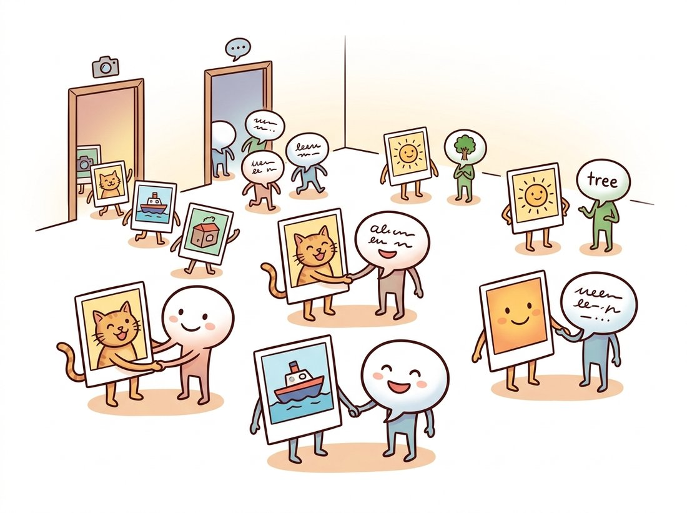

"They never told me the names of things. They just showed me four hundred million photos and the captions people had already typed underneath them. By the time they were done, I could recognize a thing I had never been trained on, simply by reading its description. Turns out the internet is one enormous, badly punctuated labeled dataset."
A CLIP Encoder Fluent in Pictures and Words
CLIP trains an image encoder and a text encoder jointly so that an image and the caption that describes it land at the same point in a shared embedding space. Because captions are free on the web, this turns the entire internet into supervision, and because the space is shared with language, the model can recognize a category it was never explicitly trained on simply by comparing the image to a text description of that category. That is zero-shot classification, and it is the capability that reorganized computer vision around foundation models. The objective is the same softmax-over-similarities contrastive loss from Section 25.2, now applied symmetrically across the two modalities. This section builds it, shows how a prompt becomes a classifier, and explains why noisy web text beat clean human labels.
Every method so far in this chapter learned from pixels alone. CLIP (Radford et al., 2021) brings in the one signal the internet produces at planetary scale for free: the text humans write alongside images. We will see how an image and its caption are encoded into a common space, write the symmetric contrastive loss that aligns them, build a zero-shot classifier out of nothing but text prompts, and understand why four hundred million noisy web pairs produced more robust features than a million clean ImageNet labels. This is the section where the learned descriptor of Chapter 10 finally becomes a universal one, comparable not just to other images but to words, and it is the exact component that will let a text prompt drive an image generator in Chapter 34.
1. Two Encoders, One Embedding Space Intermediate
CLIP has two networks. An image encoder (a ViT from Chapter 22, or a ResNet from Chapter 20) maps an image to a vector. A text encoder (a transformer) maps a caption to a vector of the same dimension. Both are followed by a linear projection into a shared $d$-dimensional space, and both outputs are L2-normalized so they lie on the unit hypersphere, where the dot product is the cosine similarity. Once each vector has length one, the $\|u\|\|v\|$ denominator in the cosine formula from Section 25.2 equals one, so the plain dot product already is the cosine. The training data is a batch of $N$ image-caption pairs. The goal: each image should be closest to its own caption and far from the other $N - 1$ captions, and symmetrically each caption should be closest to its own image. Figure 25.4.1 shows the contrastive matrix this sets up.
The loss is the InfoNCE of Section 25.2 applied in both directions. Let $I_i$ be the normalized embedding of image $i$, $T_j$ the embedding of caption $j$, and $\tau$ a learned temperature. The image-to-text loss treats each image's matching caption as the correct class among all $N$ captions; the text-to-image loss does the reverse. The total is their average,
Both terms are just cross-entropy over the rows and columns of the similarity matrix, with the correct class on the diagonal. The implementation is strikingly short for what it produces.
import torch
import torch.nn.functional as F
def clip_loss(image_emb, text_emb, logit_scale):
"""image_emb, text_emb: (N, d). logit_scale = exp(learned temperature). Symmetric."""
image_emb = F.normalize(image_emb, dim=1) # onto the unit hypersphere
text_emb = F.normalize(text_emb, dim=1)
logits = logit_scale * image_emb @ text_emb.t() # (N, N) similarity matrix
targets = torch.arange(image_emb.size(0), device=image_emb.device) # diagonal = matches
loss_i = F.cross_entropy(logits, targets) # each image picks its caption (rows)
loss_t = F.cross_entropy(logits.t(), targets) # each caption picks its image (cols)
return (loss_i + loss_t) / 2
torch.manual_seed(0)
img = torch.randn(6, 512); txt = torch.randn(6, 512)
scale = torch.tensor(100.0) # exp of the learned temperature
print("CLIP loss:", round(clip_loss(img, txt, scale).item(), 4))
# CLIP loss: ~ high for random embeddings; drops toward 0 as the diagonal dominatesimage_emb @ text_emb.t() holds every image-caption similarity; cross-entropy on its rows aligns images to captions, on its columns aligns captions to images, and the diagonal target index is what makes matching pairs the positives.That is the entire training objective. There is no classification head, no fixed label set, no taxonomy. The supervision is purely "this caption goes with this image and not the others", repeated over four hundred million pairs. The temperature is learned (parameterized as $\exp$ of a free scalar so it stays positive) and clamped to avoid runaway scaling. Everything CLIP can do downstream emerges from this single alignment.
The defining property of CLIP is that an image embedding and a text embedding live in the same space, so you can take the dot product of a photo and a sentence and get a meaningful similarity. Every CLIP capability follows from this one fact. Zero-shot classification compares an image to text descriptions of classes. Image retrieval by text compares a query sentence to a database of image embeddings. And, most consequentially for the rest of the book, a diffusion model can be steered by a text prompt because the prompt's CLIP embedding is a vector the image generator understands, the mechanism behind text-to-image generation.
The illustration below pictures this shared space as a town square where each photo finds and stands beside its matching caption.

2. Zero-Shot Classification: A Prompt Becomes a Classifier Intermediate
Here is the payoff that startled the field. CLIP was never trained to classify ImageNet, yet it classifies ImageNet competitively without seeing a single labeled ImageNet example. The trick: turn each class name into a sentence, embed all the sentences with the text encoder, embed the image with the image encoder, and pick the class whose sentence embedding is most similar to the image. The class names are the only thing you supply; no training, no labeled examples, no fine-tuning. A new set of classes is a new set of sentences, computed in seconds. This is what zero-shot means: the model generalizes to categories specified only at inference time.
The sentence template matters more than it should, an effect called prompt engineering. The bare class name "cat" embeds less usefully than "a photo of a cat", because the training captions were natural sentences, so a sentence-shaped prompt sits closer to the image distribution the text encoder learned. Averaging the embeddings of several templates ("a photo of a {}", "a blurry photo of a {}", "a {} in the wild") gives a more robust class vector still. The code below builds a zero-shot classifier from class names alone.
import torch
import torch.nn.functional as F
def zero_shot_classifier(class_names, text_encoder, tokenizer, templates):
"""Build a (num_classes, d) weight matrix from text prompts, no training at all."""
weights = []
for name in class_names:
prompts = [t.format(name) for t in templates] # "a photo of a cat", ...
tokens = tokenizer(prompts)
embs = F.normalize(text_encoder(tokens), dim=1) # (num_templates, d)
weights.append(F.normalize(embs.mean(0), dim=0)) # average then renormalize
return torch.stack(weights) # (num_classes, d)
def classify(image_emb, class_weights):
"""Pick the class whose text embedding is most similar to the image embedding."""
image_emb = F.normalize(image_emb, dim=1)
logits = image_emb @ class_weights.t() # (batch, num_classes)
return logits.argmax(dim=1)
# Usage sketch (encoders from a pretrained CLIP):
templates = ["a photo of a {}.", "a blurry photo of a {}.", "a {} in nature."]
# W = zero_shot_classifier(["cat", "dog", "car"], text_encoder, tokenizer, templates)
# preds = classify(image_features, W)
print("a zero-shot classifier is just a stack of text embeddings; classes set at inference")Because the classifier is just text, CLIP can recognize categories that no labeled dataset ever covered: a specific dog breed, a brand of car, an abstract attribute like "a person smiling". This open vocabulary is what carries forward into the open-vocabulary detection and segmentation of Section 25.5. The same property also makes CLIP a measurement tool: the similarity between a generated image and a text prompt, called CLIPScore, is a standard way to evaluate text-to-image models in Chapter 37.
"Zero-shot" sounds like the model has never encountered the category in any form, so it seems almost magical that CLIP classifies cats it was never shown. In fact CLIP was pretrained on four hundred million web image-caption pairs that almost certainly contain many cats with the word "cat" in their captions; the concept was richly present during pretraining. Zero-shot means only that no labeled examples of the downstream task's classes were used to train a task-specific classifier: you supply the class names as text at inference and build the classifier from prompts alone, with no gradient steps. The flip side of this is a real limitation, not magic: CLIP recognizes a fine-grained category (a specific bird species, a rare industrial part) only to the extent that such images and their names appeared in the web data, which is why zero-shot accuracy is strong on common objects and weak on specialist domains. Diagnostic question: would CLIP zero-shot a category whose name and appearance never co-occurred anywhere on the web? It cannot; "zero-shot" is about skipping task-specific labels, not about bypassing pretraining exposure.
CLIP can be fooled by a sticky note. In a 2021 demonstration, OpenAI showed that taping a piece of paper reading "iPod" onto an apple made CLIP confidently classify the apple as an iPod. The model had learned to read text in images so well that written words could override visual content, a phenomenon the authors named a typographic attack. It is a vivid reminder that learning from captioned web images teaches a model to associate pictures of words with their meanings, sometimes too literally.
3. Why Web Text Beat Clean Labels Advanced
CLIP's web captions are noisy: misspelled, irrelevant, sometimes wrong. A clean dataset like ImageNet has a million carefully verified labels. Intuition says clean labels should win, yet CLIP's features transferred better and, crucially, were far more robust to distribution shift, holding accuracy on stylized, sketched, and adversarially-collected versions of ImageNet where supervised models collapsed. Two reasons explain the surprise. First, scale: four hundred million pairs is four hundred times ImageNet, and the diversity of web images covers far more of the visual world than any curated set. Second, the supervision is richer per example: a free-form caption ("a brown dog catching a frisbee on a beach at sunset") carries far more information than a single class index, describing objects, attributes, relations, and context all at once. The model that must match that sentence learns a more compositional representation than the model that must emit one of a thousand integers.
Here is the contrast that made the robustness claim impossible to dismiss. On ordinary ImageNet, zero-shot CLIP and a strong supervised ResNet score about the same, so on paper they look like equals. Then swap the test set for sketches, paintings, and adversarially-collected photos of the very same thousand classes. The supervised model, which had quietly memorized the textures of natural ImageNet photos, loses most of its accuracy and falls toward the floor. CLIP barely flinches and keeps most of its accuracy across all of them. Two models that tied on the easy test diverge dramatically the moment the images stop looking like the training distribution: the one supervised on clean labels learned the dataset, while the one supervised on messy web language learned the concept. Robustness, not raw accuracy, is where the four-hundred-million-pair bet paid off.
This reframed a belief that had held since the start of deep learning. The bottleneck was never the absence of clean labels; it was the absence of scale, and the web provides scale in the form of weak, free, abundant language supervision. The transfer-learning lesson of Chapter 21 reaches its largest form here: pretrain on everything, then specialize cheaply. The practical example shows a team acting on exactly this.
Who: a four-person team at a home-decor marketplace, 2022, asked to add a "search by text" feature so shoppers could type "mid-century walnut sideboard" and see matching products. Situation: their catalog had roughly two million product photos but inconsistent, sparse text tags, and they had no budget to label a taxonomy. Problem: a conventional approach would require defining hundreds of categories and training a classifier per attribute, weeks of labeling they did not have. Decision: they embedded every product photo once with a pretrained CLIP image encoder and stored the vectors, then at query time embedded the shopper's text with the CLIP text encoder and returned the nearest product vectors by cosine similarity, exactly the shared-space comparison of subsection 1. No training, no taxonomy, no labels. Result: the feature shipped in under two weeks; free-text queries that no fixed taxonomy would have anticipated ("cozy reading nook chair") returned sensible results because CLIP understood the descriptions compositionally. They later fine-tuned the image encoder on their own catalog to sharpen domain-specific terms, but the zero-shot version was already good enough to launch. Lesson: a CLIP embedding is a universal descriptor you can compute once and reuse across search, recommendation, and deduplication. When the task is "match images to language", a pretrained CLIP often removes the entire labeling project.
With the shared embedding space of subsection 1 you already have everything needed for a small but genuinely useful tool: a search engine over your own photo library that answers free-text queries. Embed every photo once with a frozen CLIP image encoder and store the vectors; at query time, embed the typed phrase ("sunset over water", "my dog on the couch") with the text encoder and return the photos whose embedding has the highest cosine similarity, exactly the home-decor team's pipeline above scaled down to a personal archive. A beginner-friendly version (around 30 to 45 minutes, no training and no labels) ranks a folder of a few hundred images and prints the top matches; an advanced extension wraps it in a tiny web UI and swaps in a vector index (such as FAISS) so it stays fast over tens of thousands of photos. This differs from the zero-shot classifier of subsection 2 in that the vocabulary is not a fixed label list but any sentence the user types, and it is exactly the kind of self-contained, portfolio-ready project that demonstrates you understand why one shared space makes pictures and words comparable.
The two encoders, the tokenizer, the projection heads, and the prompt machinery are all packaged. With OpenCLIP, a full zero-shot pipeline is a handful of lines:
# Zero-shot classification end to end with a pretrained CLIP:
# encode the image and the candidate prompts, then softmax their similarities.
import open_clip, torch
model, _, preprocess = open_clip.create_model_and_transforms("ViT-B-32", pretrained="laion2b_s34b_b79k")
tokenizer = open_clip.get_tokenizer("ViT-B-32")
image = preprocess(some_pil_image).unsqueeze(0)
text = tokenizer(["a photo of a cat", "a photo of a dog"])
with torch.no_grad():
img_f = model.encode_image(image); txt_f = model.encode_text(text)
probs = (img_f @ txt_f.T).softmax(dim=-1) # zero-shot class probabilitiescreate_model_and_transforms downloads the LAION-2B checkpoint with its matching preprocessing, and the final (img_f @ txt_f.T).softmax reproduces the text-embedding comparison that Code Fragments 1 and 2 built by hand, including the normalization and the learned temperature.This replaces the two encoders, the contrastive training, the four-hundred-million-pair dataset, and the prompt-averaging code with one model download. The library handles preprocessing, tokenization, the normalization, and the learned temperature, and exposes both CLIP and the SigLIP variants below through the same interface. The from-scratch loss and classifier above exist so you know what encode_image and that final softmax are doing.
CLIP's softmax loss normalizes over the whole batch, which couples every pair to every other and rewards very large batches, the same hardware pressure that shaped Section 25.2. SigLIP (Zhai et al., 2023) replaces the softmax with a pairwise sigmoid loss: each image-text pair is independently judged match or non-match, removing the all-pairs normalization. This trains well at far smaller batch sizes and now anchors many 2024 to 2026 systems, including the open-vocabulary detectors of Section 25.5 and the vision encoders inside multimodal language models. Parallel directions include EVA-CLIP and DFN, which improve CLIP through better data filtering rather than a new loss, echoing the data-curation lesson of DINOv2. The open question for the next few years is how much further language supervision scales, and whether the next jump comes from a better objective, better data, or fusing CLIP-style alignment with the self-distillation and masked modeling of Section 25.3, the convergence we map in Section 25.6.
CLIP averages an image-to-text loss and a text-to-image loss. Explain what each term enforces on its own, and construct a degenerate failure that could occur if you optimized only the image-to-text direction (each image finds its caption, but captions are free to collide). Then argue why the symmetric average prevents this, and relate the structure to the row-versus-column cross-entropy in the code of subsection 1.
Using the OpenCLIP library shortcut, build three zero-shot classifiers for a 10-class subset of your choice: one using the bare class name, one using "a photo of a {}.", and one averaging five diverse templates. Evaluate all three on a labeled test set and report accuracy for each. You should see the sentence template beat the bare name and the averaged templates beat the single template. Write one paragraph explaining why, in terms of the distribution of text the encoder was trained on.
The section argues that 400 million noisy web pairs beat 1 million clean ImageNet labels for transfer and robustness, citing two reasons: scale and richer per-example supervision. Design a thought experiment (or a small real one if you have the data) that would let you separate these two factors: how could you hold the supervision type fixed and vary only scale, and hold scale fixed and vary only supervision richness (caption versus class index)? Predict the outcome of each arm and explain which factor you expect to dominate for robustness to distribution shift specifically.